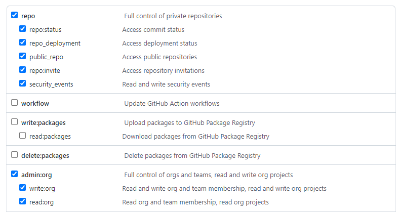

GitHub : Your own on-demand runner in your corporate network
An end-to-end solution to run containerized GitHub Actions Runner in your corporate network, anyone? You will be able to use GitHub to manage the deployment of your applications and services even in the secure areas of your corporate network.
In a previous article, I suggested that you set up a solution allowing you to provision your Azure DevOps agents on demand (see Azure DevOps: Your own on-demand agents in your corporate network). I suggest you do the same thing but with GitHub.
Why do it?
For the same reasons as with Azure DevOps Services, namely:
- If you want to use GitHub Actions to deploy your applications and services in your network-isolated corporate.
- If you want to use containers for your build and/or deploy operations to avoid side effects related to previous CI/CD pipeline executions.
- If you want to reduce the time of build and deployment of your pipelines by pre-installing your frameworks and legacy tools on your agents.
Architecture
I suggest you orchestrate your GitHub Actions Runner with Azure Batch. The entire architecture will therefore be on Azure. Of course, this is a proposal, it is certain that you can achieve an equivalent architecture on another cloud host or on your private cloud.

Concretely, here is the sequencing that will occur for the provision of an ephemeral agent:
- GitHub calls the ProvideActionsRunner function to request an ephemeral runner,
- For each call, the Azure Function creates a task in Azure Batch Account,
- The Azure Batch Account processes the tasks and assigns the task to the correct pool of nodes,
- The pool of nodes instantiates a container from the image present in the Azure Container Registry,
- Once the container is instantiated and started, it registers with GitHub to let it know that it is available. GitHub then assigns it a pending job.
- The GitHub job runs in the Virtual Network A and can communicate with the On Premise network.
We can see that the Azure Batch service (and its pools) as well as Azure Container Registry are completely isolated from a network point of view. Only the Azure Function is publicly accessible. However, the latter has a firewall rule limiting calls to GitHub public IP ranges.
Note
GitHub provides the IP ranges of its services from this api
All that remains is to deploy our infrastructure on Azure.
Infrastructure
I updated the infrastructure previously set up for Azure DevOps Service with the few specificities of GitHub. Below is the ARM template to quickly deploy the infrastructure for GitHub (and for Azure DevOps).


This ARM template provides 2 pools of nodes : one pool for Actions Runner on Windows and another for Actions Runner on Linux.
Note
Since Windows containers can only run on Windows OS, we have no choice but to provision pools with separate OS.
Auto-scale
Azure Batch offers an auto scaling system for nodes in a pool. In our case, we are going to use it to avoid running VMs on Azure for several hours without a build or deployment operation. For each of these pools, I added the auto scaling script below:
$nbTaskPerNodes = $TaskSlotsPerNode;
$currentNodes = $TargetLowPriorityNodes;
$nbPending5min = $PendingTasks.GetSamplePercent(TimeInterval_Minute * 5) < 70 ? max($PendingTasks.GetSample(1)) : max($PendingTasks.GetSample(TimeInterval_Minute * 5));
$nbPending60min = $PendingTasks.GetSamplePercent(TimeInterval_Minute * 60) < 70 ? 1000 : max($PendingTasks.GetSample(TimeInterval_Minute * 60));
$totalLowPriorityNodes = $nbPending5min > max(0, $TaskSlotsPerNode * $currentNodes) ? $currentNodes + 1 : $currentNodes;
$totalLowPriorityNodes = $nbPending60min <= $TaskSlotsPerNode * max(0, $currentNodes - 1) ? $currentNodes - 1 : $totalLowPriorityNodes;
$totalLowPriorityNodes = min(4, max($totalLowPriorityNodes, 0));
$TargetLowPriorityNodes = $totalLowPriorityNodes;
$NodeDeallocationOption = taskcompletion;
This script will evaluate the number of tasks in progress or pending:
- If this is greater than the number of nodes multiplied by the number of parallel tasks, a new node will be added.
- If this is less than the number of nodes - 1 multiplied by the number of parallel tasks, a node will be released.
The Scale-Out (addition of a node) is evaluated over the last 5 minutes in order to be as responsive as possible in the event of an increase in the number of tasks. The Scale-In (deletion of a node) is evaluated over the last hour in order to be able to manage occasional drops in tasks.
Here is an example of what the activity could give on a day:

Limitations
However, you should know that there are some small limitations:
- Although you can deploy your Azure Batch pools with ARM template, it is not possible to increment the pool infrastructure. In other words, you cannot modify an existing pool. And, it's even worse since you'll get an error if your pool already exists when your ARM template runs. To compensate for this limitation, I added 2 parameters "create_WindowsBatchPool" and "create_UbuntuBatchPool".
- When creating your container registry, it does not contain any images. It will therefore be necessary to provide for the import of the images of your Runner Actions.
For this second limitation, I suggest you study the containerization of our Actions Runner.
Containerize your actions runner
I went back from my work for containerizing Azure DevOps agents to apply it to Runner Actions.
You can find my adaptations on my repository GitHub, and the generated images on dockerhub.
All that remains is to import the images from dockerhub to your Azure Container Registry with the following Azure CLI commands:
az acr import -n [YOUR_ACR_NAME] --source docker.io/pmorisseau/githubactions-runner:ubuntu-20.04-actionsrunner -t githubactions-runner:ubuntu-20.04-actionsrunner
az acr import -n [YOUR_ACR_NAME] --source docker.io/pmorisseau/githubactions-runner:ubuntu-20.04-actionsrunner -t githubactions-runner:ubuntu-18.04-actionsrunner
az acr import -n [YOUR_ACR_NAME] --source docker.io/pmorisseau/githubactions-runner:windows-core-ltsc2019-actionsrunner -t githubactions-runner:windows-core-ltsc2019-actionsrunner
Now let's go to programming the function that will generate the tasks in Azure Batch.
An Azure function to drive Azure Batch
Our goal is to allow the creation of a task running our containerized image in Azure Batch via the HTTPS call of an Azure function.
As a reminder, a task must be executed in a job. So if the job does not exist, it will have to be created. Our job will also allow us to define the environment variables of our containerized agent. In our case, we need to set as environment variables:
- The url of the GitHub organization or the url of the personal repo,
- The token to allow our agent to register,
- The tags that will allow you to assign the correct runner to the correct GitHub job,
- The top indicating if the agent should run only one GitHub Actions job.
We will use .NET 6.0 to program our Azure Function. You can find here the improved source code to handle both Azure Devops and GitHub.
On GitHub the token used to register our runner is valid for one hour. It is therefore necessary to plan to systematically request a new token for each job. To do this, you must call the GitHub API.
Note
GitHub provides full api documentation to retrieve this token for:
But to be able to call the API, you have to be authenticated! There are 3 methods:
- GitHub App: Allows you to create an application allowing your users to access through it the services of GitHub.
- OAuth App: Allows you to create an application allowing access on behalf of the user to GitHub services.
- Personal Access Token: Allows you to access GitHub services by pretending to be you.
In my case, I opted for the simplest solution to implement: the Personal Access Token. But I strongly recommend you to opt for the OAuth App.
To create your Personal Access Token:
- Click on
Settingsin your account tab, - Click on
Developer settingsand thenPersonal access tokens, - Then
Generate new token - Enter a label and a validity period.
- Select scopes. In our case, if you want to create runners at the level of your organization, you will have to check
admin:org. And if you want to create runners at the level of your repos, you will have to checkrepo.  - Finally click on
Generate token. Your token is displayed. Save it since it will no longer be visible!
Here is the necessary configuration for the Azure Function:
| Name | Description |
|---|---|
| BatchAccountUrl | Url of Azure Batch service |
| BatchAccountName | Name of Azure Batch service |
| BatchAccountKey | Access key of Azure Batch service |
| ContainerRegistryServer | full name of Azure Container Registry service |
| UbuntuPool | Pool name containing agents running on Ubuntu |
| WindowsPool | Pool name containing agents running on Windows |
| GithubToken | Personal access token allowing to request a token for the registration of the runner |
Integration with GitHub
Now that we have our solution running on Azure, we need to allow our GitHub workflows to request a runner and use it when available.
What's great about GitHub unlike Azure DevOps Services is the multitude of webhooks. GitHub notably offers a webhook for jobs.
Note
GitHub provides full webhook and payload documentation here
In our case, we will subscribe our Azure function to webhooks from GitHub.
For it :
- in the
Settingsof your repository or your organization click onWebhooks, - click on
Add Webhooks, - in
Payload URLenter the full url of your function: https://[YourAzureFunction].azurewebsites.net/api/ProvideActionsRunner?code=[YourSecret] - in
Content Typeselectapplication/json - check
Let me select individual events. - uncheck
Pushes - check
Workflow jobs - Finally click on
Add webhooks
Now whenever you have a new GitHub job, your Azure function will receive a notification to create a runner.
All that remains is to create the GitHub workflow!
To indicate that you want a self-hosted agent you must specify for your jobs: runs-on: [self-hosted].
And to indicate the type of OS you want to use, you will need to add another label: ubuntu-18.04, ubuntu-latest or windows-latest.
For example :
name: Test Agent
on:
push:
branches:
- master
- main
jobs:
use-selfhosted-ubuntu1804:
runs-on: [self-hosted, ubuntu-18.04]
steps:
- uses: actions/checkout@v2
- name: Fetch release version
run: |
echo "Hello world !"
use-selfhosted-ubuntu2004:
runs-on: [self-hosted, ubuntu-latest]
steps:
- uses: actions/checkout@v2
- name: Fetch release version
run: |
echo "Hello world !"
use-selfhosted-windows:
runs-on: [self-hosted, windows-latest]
steps:
- uses: actions/checkout@v2
- name: Fetch release version
run: |
echo "Hello world !"
Conclusion
After showing you that it was possible to provision your own Azure DevOps Services agents in your corporate network, I repeat my demonstration on GitHub. The software factory changes but the concept still works.
It is also an opportunity to compare the strengths and weaknesses of each.
GitHub is unquestionably the big winner with:
- the multitude of webhooks available to implement interactive scenarios affecting the surrounding ecosystem.
- registration of runners with a temporary token which is much more secure than the Personal Access Token of Azure DevOps.
But Azure DevOps has not said its last word!
References
- GitHub : Api Meta
- GitHub : Api Actions
- GitHub : Basic Authentication
- GitHub : Webhook events and payloads
- Terraform module for scalable self hosted GitHub action runners
Thanks
- Michael Maillot : for proofreading
Written by Philippe MORISSEAU, Published on February 21, 2022.